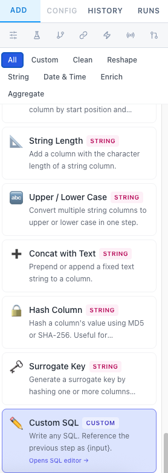

Dremio Transform Studio
Step-by-step walkthrough with screenshots — from connecting to Dremio through building, scheduling, and monitoring production pipelines.
Connect to Dremio
Tell Transform Studio where your Dremio instance lives and how to authenticate.
On first launch you'll see the main layout but the catalog tree will be empty. Click the gear icon (⚙) in the top toolbar to open Settings → Connection.

| Deployment | Auth Type | Fields |
|---|---|---|
| Self-hosted | Password | host, port (9047), username, password |
| Dremio Cloud | PAT | api.dremio.cloud, Personal Access Token, Project ID |
Click the gear icon ⚙ in the top-right toolbar.
Go to the Connection tab.
Fill in your host/port (self-hosted) or set auth type to PAT and enter your token + project ID (Dremio Cloud).
Click Test Connection — you should see a green success message.
Click Save. The catalog tree will populate on the left.
Main Layout Overview
Three-panel workspace — catalog on the left, pipeline in the center, controls on the right.

Left Panel — Catalog
Browse Dremio namespaces and tables. Click a table to select it as pipeline source.
Center — Pipeline Builder
Drag-and-drop step list. Each card shows the transform type and key config at a glance.
Right — Transform Library
53 transforms in 7 categories. Click any card to add it to the pipeline.
Bottom — Preview Table
Live query results after clicking Preview. Switch to the SQL tab to see generated code.
Top Toolbar
Save, Execute, Schedule, Lineage, DAG, Health, Alerts, DQ Hub, Templates, dbt, Settings.
Pipeline List (sidebar)
All your saved pipelines. Click to switch; press ⌘K to search by name or step.
Create a Pipeline & Select a Source Table
Every pipeline starts with picking a source table from the catalog.


Click + New Pipeline in the left sidebar (below the pipeline list).
In the left catalog tree, expand a namespace and click any table name. It becomes the pipeline's source.
The pipeline shows a Source node with the table name.
Click the pipeline name at the top to rename it (e.g.
daily_sales_summary).
namespace.table_name format (e.g. Samples."samples.dremio.com"."NYC-taxi-trips"). You can also type a name directly in the source field — useful for tables that are deep in the catalog.Add Transform Steps
Browse 53 pre-built transforms and add them to your pipeline in seconds.


Transform Categories
Clean (14)
Remove duplicates, fill nulls, cast types, trim, validate regex, filter rows…
Reshape (9)
Join, union, split columns, combine, pivot, unpivot, flatten JSON…
DateTime (5)
Parse dates, extract parts, truncate, diff, add intervals…
Enrich (10)
Lookup join, map values, bin, row numbers, conditional columns, lag/lead…
Aggregate (5)
Group & aggregate, top-N per group, rolling window, sample rows…
String (8)
Extract regex, pad, substring, hash, concat literal, surrogate key…
Custom SQL (1)
Full SQL editor with {input} placeholder and template library.

{input} where you want the upstream CTE to be substituted.Configure a Transform Step
Click any step card to open its configuration form in the right panel.

When you click a step card in the center panel, the right panel switches from the Transform Library to the Step Config view. Each transform shows only the fields relevant to it — column selectors, dropdowns, text inputs, or toggles.
- Column dropdowns are automatically populated from your table schema.
- Fields with
{{param}}syntax allow pipeline parameters — pass different values at runtime or via webhook. - Click the 📝 note icon on any step to add a free-text annotation visible in the step card and searchable via ⌘K.
- Changes are applied immediately — click Preview to see the effect.
Custom SQL Step
Drop into a full SQL editor when the visual transforms aren't enough.

{input} to reference the upstream step.The Custom SQL transform gives you a full-screen Monaco-style SQL editor. This is useful for complex window functions, multi-table lookups, or anything else not covered by the visual transforms.
Key concepts
{input}— placeholder that gets replaced with the CTE alias for the previous step's output. Always reference it in yourFROMclause.- Template Library — save frequently-used SQL snippets and load them into any pipeline's Custom SQL step. Snippets are searchable by name.
- The SQL you write is embedded as a CTE in the final generated query, so it composes cleanly with other steps.
SELECT * EXCEPT. Avoid seeded RAND(n) — use RAND() only. Use lax mode for JSON paths: JSON_VALUE(col, 'lax $.field').Preview Results
See live query results before committing to write anything.


Click the Preview button in the toolbar (or the blue ▶ button at the bottom of the step list).
Transform Studio compiles your pipeline to a CTE chain and sends it to Dremio.
Results appear in the bottom panel — scrollable grid with column headers and types.
Switch to the SQL tab to inspect the generated code.
SELECT — no data is written until you click Execute. Preview as many times as you like without any risk.Set Output Mode & Execute
Choose how to materialize your pipeline, then execute to write data to Dremio.

| Output Mode | What it does | Best for |
|---|---|---|
| Preview | SELECT only, nothing written | Development / exploration |
| CTAS | CREATE TABLE AS SELECT — creates or replaces a Dremio table | Batch tables, snapshots |
| Insert | INSERT INTO an existing table | Append new rows |
| View | CREATE OR REPLACE VDS — a virtual dataset (no data copy) | Live, always-current views |
| Incremental | Append or merge only new rows since last run | Large tables, daily loads |
Set the Output Table name (fully-qualified, e.g.
MySpace.daily_sales).Choose the Output Mode from the dropdown.
Click Execute in the toolbar.
Transform Studio writes the data and reports row count on success.
Any configured Pipeline Tests run automatically after a successful execute.
not_null, unique, row_count_between, accepted_values, relationships, or custom_sql. Tests with severity error block the pipeline from being marked successful.Visual Lineage
See a column-level DAG from source through every transform step to the output.


Click the Lineage button (GitFork icon) in the toolbar to switch the center panel from the step list to the lineage DAG. Each node represents a step, and edges show data flow. Expand any step to see the column-to-column mappings.
- Computed from pipeline configuration — no run required.
- Column-level detail for all 53 transform types.
- Useful for data governance and impact analysis.
Schedule a Pipeline
Run pipelines on a cron schedule with optional SLA deadline alerting.


Click the CalendarClock icon in the toolbar (tooltip: "Schedule Pipeline").
Enter a cron expression (e.g.
0 6 * * *for 6 AM daily) or pick a preset.Optionally set Max Retries (0–5) with exponential backoff (1 min, 2 min, 4 min…).
Toggle SLA Deadline on and set a time (e.g.
08:00UTC). If the pipeline hasn't completed successfully by that time, an alert fires via email or Slack.Click Save Schedule. The schedule activates immediately.
Version History & Run Log
Every save creates a version. Every execution creates a run record.


Version History
Click the History button in the right panel tabs. Every time you save a pipeline, a new version is created with a timestamp. Click Restore on any version to revert the pipeline steps to that state.
Run Log
The Runs tab shows all historical executions for the current pipeline: status (✅ success / ❌ failed), row count, start time, duration, and error details if any. A global run log across all pipelines is available from the Health Dashboard.
Pipeline Health Dashboard
A bird's-eye view of all pipeline statuses, recent runs, and failures.


Click the Health button (heart icon) in the toolbar. The dashboard shows:
- Total pipelines, scheduled pipelines, recent successes and failures.
- Per-pipeline last-run status, row count, last execution time.
- Global run history log at the bottom — all pipelines, newest first.

Alerts
Custom SQL checks, pipeline health monitors, and data quality alerts — all on a schedule.

Click the Alerts button (bell icon) in the toolbar to open the alerts page. Click + New Alert to create one.
| Alert Type | How it works |
|---|---|
| Custom SQL | Runs a SQL query against Dremio; fires if any rows are returned (e.g. SELECT 1 FROM orders WHERE status = 'error'). |
| Pipeline Health | Fires if a specific pipeline failed in its last N runs. |
| Data Quality | Fires if a DQ monitor's score drops below its configured threshold. |
| Source Freshness | Fires if MAX(timestamp_col) of a table is older than a configured threshold. |
Notifications go to email and/or Slack (configured in Settings → Notifications). You can also click Run Now on any alert to test it immediately.
Data Quality Hub
Dedicated DQ workspace with monitors, scoring, scheduling, and 14 built-in rules.


Click the DQ Hub button (shield icon, DQ Hub) in the toolbar. DQ Hub has four sections:
- Overview: Stat cards + monitor health grid with animated score rings.
- Monitors: List of all DQ monitors with score, last-run time, and run/edit controls.
- History: Cross-monitor scan log — all scans newest first with per-rule results.
- Rule Catalog: All 14 built-in rule types with descriptions and an "Add to monitor" shortcut.
14 Built-in DQ Rules
Completeness
Null check, completeness rate threshold
Validity
Regex pattern match, accepted values, range check
Uniqueness
Duplicate check, unique ratio threshold
Accuracy
Custom SQL assertion, referential integrity
Timeliness
Source freshness — max timestamp age
Consistency
Row count threshold, cross-table count match
DQ scores are a weighted average of rule pass rates (0–100%). ≥ 90% green, 70–89% amber, < 70% red. Monitors can alert via email/Slack when score drops below a configurable threshold.
Cross-Pipeline DAG
Visualize and manage dependencies between pipelines.

Click the DAG button (GitBranch icon) in the toolbar. The full-screen SVG view shows all pipelines and their dependencies as a directed graph.
- Add dependencies from the Dependencies tab in the right panel of any pipeline.
- Cycle detection highlights circular dependencies in red.
- Use the Run with Dependencies button (GitMerge icon) to run the full upstream chain in topological order — skips downstream pipelines if an upstream one fails.
- The execution order (topological sort) is shown in the tooltip of each node.
Pipeline Templates
Deploy a fully-configured pipeline from a pre-built template in one click.

Click the Templates button (grid icon) in the toolbar. Choose a template, review its steps, enter your source table name, and click Deploy Template. The pipeline opens immediately, ready to preview or adjust.
| Template | Category | Steps |
|---|---|---|
| Daily Sales Summary | Analytics | 4 |
| Customer 360 | Analytics | 5 |
| Top Products by Revenue | Analytics | 4 |
| Revenue by Region | Analytics | 4 |
| Churn Candidates | Marketing | 5 |
| User Activity Funnel | Product | 5 |
| Monthly Cohort Retention | Product | 6 |
| Data Freshness Audit | Operations | 3 |
dbt Compatibility
Export your pipelines as a dbt project, or import any dbt project into Transform Studio.

Export to dbt
Click the Package icon in the toolbar. Downloads a standard dbt project ZIP with one .sql model per pipeline, sources.yml, schema.yml, and dbt_project.yml. Run with dbt run after editing profiles.yml.
Import from dbt
Click the Upload icon. Drop your dbt project ZIP. Transform Studio parses Jinja, resolves {{ ref() }} to pipeline dependencies, maps materializations, and converts schema.yml tests to pipeline tests.
Seed a Table from CSV
Upload a CSV file directly to Dremio as a new table — no SQL required.

Click the Upload CSV button (table icon) in the toolbar.
Drag and drop a
.csvfile (up to 5,000 rows).Transform Studio shows a preview with inferred column types. Adjust if needed.
Enter the destination table name (must be an Iceberg source or Space, not a Hive/Parquet source).
Click Create Table. The table appears in the catalog tree immediately.
MySpace). Seeding into @username home spaces creates a VDS, not a physical table.Pro Tips
Power-user features that save time once you're comfortable with the basics.
Global Search ⌘K
Press ⌘K (Mac) or Ctrl+K to search all pipeline names, step configs, source tables, and notes instantly.
Tags & Folders
Tag pipelines with free-form labels and group them into folders. Filter the sidebar by tag to find related pipelines fast.
Audit Log
Admins can see a full log of every create, save, execute, delete, share, schedule, and SLA breach — with user, timestamp, IP, and details. CSV export available.
Webhooks
Each pipeline has a unique webhook URL. POST to it from any system (Airflow, CI/CD, etc.) to trigger a run. Pass param_values in the body for parameterized pipelines.
MCP Server
Built-in MCP server at /mcp/sse with 22 tools. Connect any AI agent (Claude, Cursor, etc.) to run, list, schedule, and inspect pipelines via natural language.
Export Documentation
Click the doc-export button to download a self-contained HTML file documenting all your pipelines — steps, parameters, schedules, tests — shareable without any login.
Pipeline Tests
Use the Tests tab to add assertions that run after every execute. Store failing rows to a Dremio table for investigation. Block deploys on test failures.
SSO / Multi-User
Enable auth via Settings → Security. Add Okta, Azure AD, or Google SSO. Assign Admin / Editor / Viewer roles. Share individual pipelines with specific users.
.db file. Use Restore from Backup to migrate between machines or recover from issues.Dremio Transform Studio · v1.10 · github.com/dremio-community/dremio-transform-studio